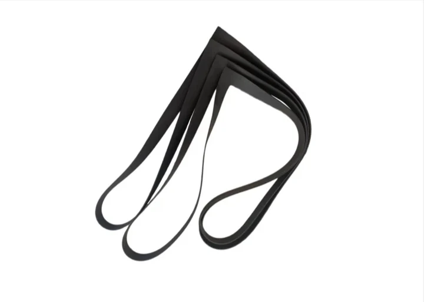
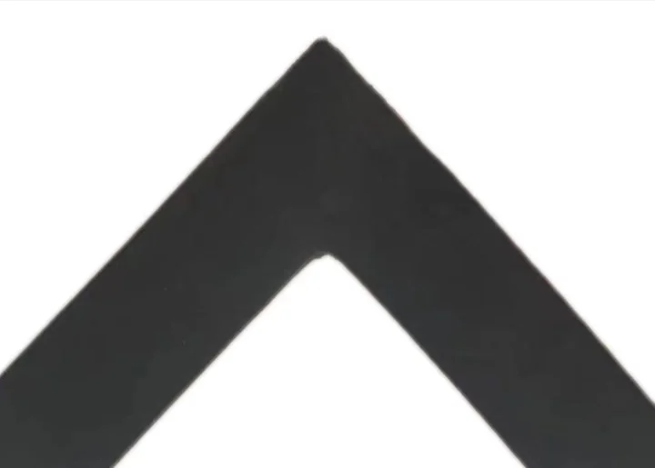

O Metatecno
Spoločnosť Metatecno bola založená v roku 1991, zaberá približne 40 000 metrov štvorcových a je členom Čínskej asociácie chlor-alkalického priemyslu. Podporuje ju skúsený riadiaci tím a silný technický kolektív. Metatecno vyrába gumové tesniace výrobky, elektrolyzérové články pre iónovo-membránové elektrolyzéry a zostavy hadíc PTFE. Procesné schopnosti zahŕňajú technické opravy, povlakovanie a úpravu vzdialenosti membrána-elektróda pre viaceré modely iónovo-membránových elektrolyzérov, palladiovanie rámov, prevod na zliatinu titán-palladium, výrobu elektrolyzérov s kovovou anódou a výrobu i opravy chlorátových elektrolyzérov.
Vybrané produkty
Produkty
Lokálna výroba elektrolyzérových článkov, tesnení pre iónovo-membránové elektrolyzéry a zostáv hadíc PTFE.
Elektrolyzérové články a tesniace výrobky
DD350 Elektrolyzérové články a tesniace výrobky 1

Elektrolyzérové články a tesniace výrobky
DD350 Elektrolyzérové články a tesniace výrobky 2

Elektrolyzérové články a tesniace výrobky
DD350 Elektrolyzérové články a tesniace výrobky

Elektrolyzérové články a tesniace výrobky
F2 Elektrolyzérové články a tesniace výrobky

Elektrolyzérové články a tesniace výrobky
F2 Elektrolyzérové články a tesniace výrobky 1

Elektrolyzérové články a tesniace výrobky
F2 Elektrolyzérové články a tesniace výrobky 2

Elektrolyzérové články a tesniace výrobky
F2 Elektrolyzérové články a tesniace výrobky 1

Elektrolyzérové články a tesniace výrobky
F2 Elektrolyzérové články a tesniace výrobky 2

Elektrolyzérové články a tesniace výrobky
Elektrolyzérové články a tesniace výrobky 1
Výrobná dielňa
Výrobná dielňa
Technická podpora od výkresu po stabilnú sériovú výrobu.

Výrobná dielňa 2

Výrobná dielňa 3
Zariadenia na skúšanie kvality
Technológia a kvalita
Systém kvality a kontrolné záznamy podporujú každú dávku.
Zariadenia na skúšanie kvality 1

Zariadenia na skúšanie kvality 2